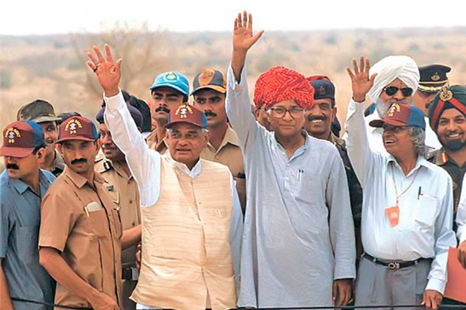
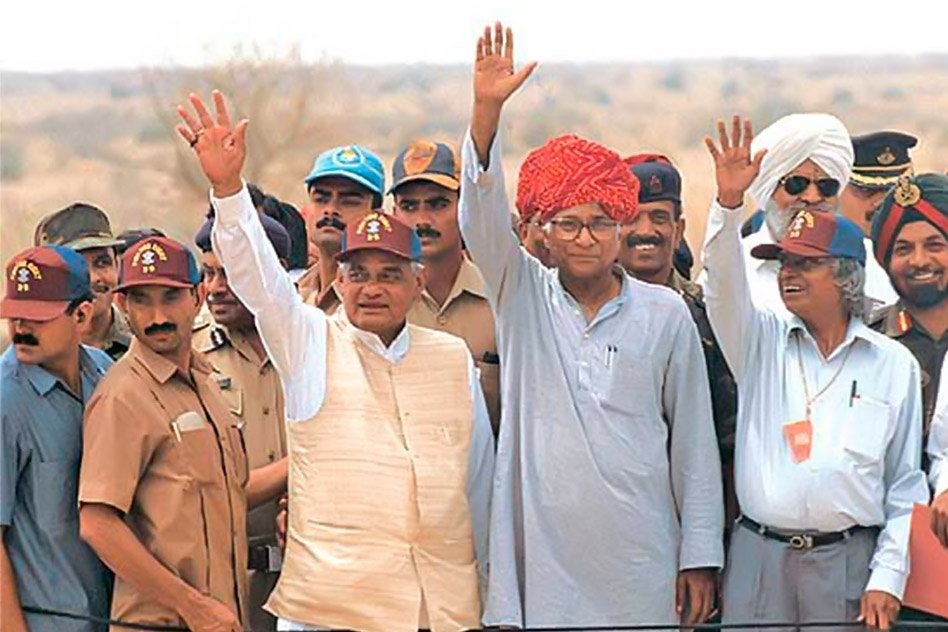

I greatly admire Dr. A P J Abdul Kalam, often referred to as the "People's President" and the "Missile Man of India," was a renowned Indian scientist, engineer, and politician. Born on October 15, 1931, in Rameswaram, Tamil Nadu, Kalam played a pivotal role in shaping India's space and defense capabilities.Some of his achivements are : 1.Space and Missile Development: Led India's first indigenous Satellite Launch Vehicle (SLV-III) and contributed significantly to the development of Prithvi and Agni missiles, establishing India's prowess in space and missile technology. 2.Nuclear Tests and Defense Leadership: Played a pivotal role as the Chief Scientific Adviser during the Pokhran-II nuclear tests in 1998, showcasing India's capabilities in nuclear technology and defense. 3.Presidency and Bharat Ratna: Served as the 11th President of India (2002-2007), receiving the Bharat Ratna, India's highest civilian award, before assuming the presidency. 4.Visionary Author: Authored "India 2020: A Vision for the New Millennium," outlining a vision for India's development, emphasizing education, technology, and societal progress. 5.Educational Advocacy and Inspiration: Actively promoted education and engaged with students, earning a reputation as the "People's President" and leaving a lasting legacy as an inspirational figure for the youth. The manner in which he consistently demonstrated qualities such as humility, perseverance, and a deep commitment to education and innovation truly reflects Dr. APJ Abdul Kalam's exceptional character.
Here is a snapshot of some key moments that showcase their incredible journey:
 
